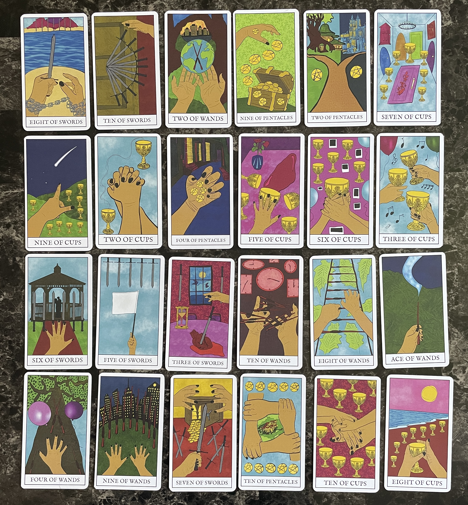

Thesis Weekly Update #13
April 29, 2024: Production week
Project Updates
This past week, I worked on the final deliverables for Thesis.
I had my 40 Minor Arcana cards printed at a different printing shop In Long Island, which offers more specialized options in card printing, trims, and rounded corners. The cards are definitely an improvement from my earlier prototype prints, which is great! The color is less saturated which helps with image contrast. I also updated the back designs of the cards and swapped to a more readable font that still retains the aesthetic of Rye: IM Fell.
I created the slideshow for my final in-class presentation using Adobe Illustrator. In addition, I’m working on InDesign to design my Thesis book. It is still shifting around as I revise the content of my report.
I created the slideshow for my final in-class presentation using Adobe Illustrator. In addition, I’m working on InDesign to design my Thesis book. It is still shifting around as I revise the content of my report.
This week, I will be finalizing the Thesis book and content of my guidebook before running off some prints of it. I should be all set for reusable laminated worksheets for the day of the showcase.
